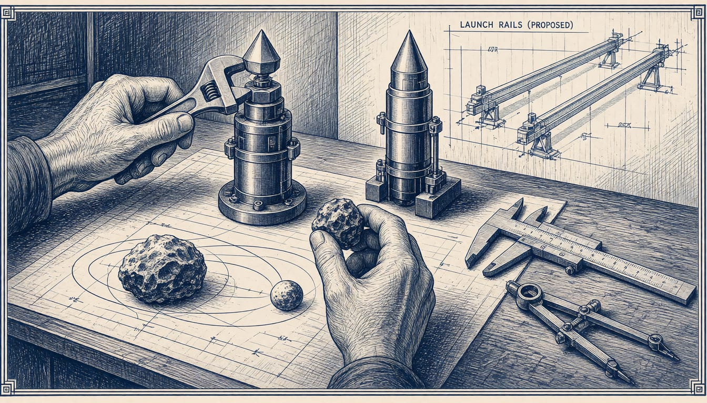

Opinion
America struck the asteroid. The next strike must be Europe's.
Hera proves Europe can build the whole science chain, yet the kinetic technique still belongs to one agency and its unknowns are unresolved. ESA's member states should order a European impactor with common money at the next ministerial council.

2022. In September of that year, NASA's 580-kilogram spacecraft struck the asteroid Dimorphos at 6.1 kilometres per second and shortened its orbit by about 33 minutes. Europe watched from the gallery. On 25 November, at a conference in Berlin, our own Hera mission will unveil the first detailed post-impact images of Dimorphos, and ESA has already called them historic. The pictures will be fine. What comes after them has not been decided. By ESA's own account, key unknowns remain before the kinetic method becomes a well-understood, repeatable technique Europe could use if Earth comes under threat.
The split has now run for four years. America throws the hammer; Europe measures and publishes. A small Italian cubesat filming the impact was our whole share of the strike. Four years of watching, and the technique the strike proved still belongs to one space agency. ESA's own papers name the gaps: the makeup, structure and mass of the target above all. A good that protects a continent but sits in one power's hands is a dependence with a friendly face, because the power that runs the next demonstration writes the technique the rest of us must trust. Every year without a European impactor is another year that rulebook stays in Washington. Measuring is our half of a job we have not started.
Hera has reached Didymos, a 780-metre body spinning every 2.2 hours, fast enough to be close to coming apart, with the 151-metre Dimorphos circling barely more than a kilometre away. It proves Europe can build and fly the entire science chain: twenty-five instruments, two CubeSats, one of them eventually to attempt a landing, radar probing under the surface. The spacecraft is flown from Darmstadt, on daily contact 196.5 million kilometres from Earth, and its early images of Didymos already show boulders, craters and a sharp equatorial ridge on the side DART's camera never saw. In ESA's own words, the mission exists to turn the one-off experiment of 2022 into a technique. The investigation will settle the numbers that decide everything. Mission scientist Michael Küppers told Astronomy Now that "Something a bit heavier or faster than DART may have destroyed the asteroid, which is not a desirable outcome for planetary defence." The margin between a deflection and a shattering run is exactly what Hera exists to count, because a University of Bern simulation team estimates the 2022 impact threw 1% of Dimorphos's mass into space and shifted another 8% around its body, whose escape velocity is just ten centimetres per second. One piece is missing from a full European chain: a kinetic impactor launched on European rockets.
The margin can be measured. The decision cannot wait.
At its next ministerial council, ESA's member states should take the step that follows from ESA's own goal of turning the kinetic impact method from a one-off American experiment into a well-understood, repeatable technique: order a European impactor, with the common money attached. We do not accept a shield that only one power can swing. ESA says the mission exists so the technique can be repeated if Earth comes under threat. The council should vote to make sure Europe can repeat it on its own. Common money, European industry, one standing planetary-defence chain.